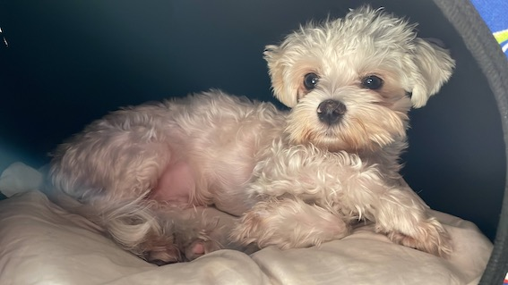

Rocco el Maltes
Inicio
Cuidados
Galeria
Aprenda sobre Maltes
Contactenos

Vacunacion
Desparacitar
Alimentacion
Peluqueria
Banos
3 Recien Nacido
Cada 60 dias
Royal Cannin Mini Adult
Cada 60 dias
1 vez al Mes